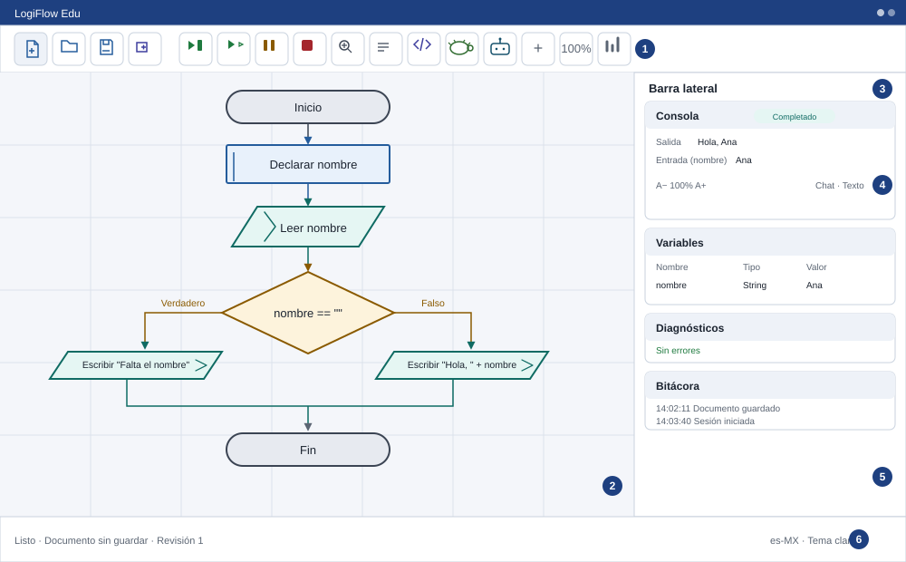
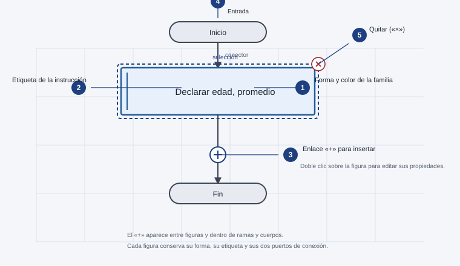
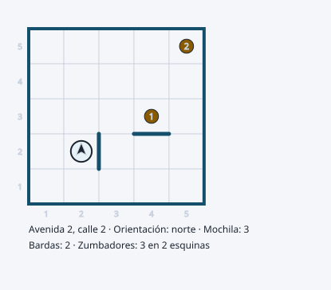
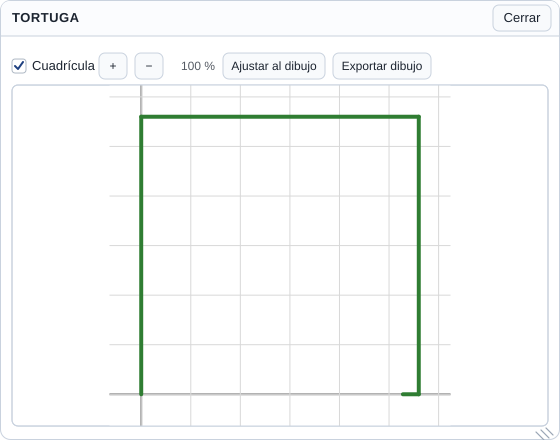
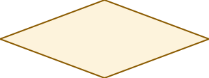
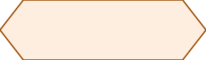
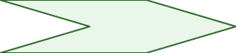
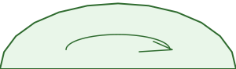

Editor visual estructurado
Inserta figuras en cualquier enlace +, edítalas con doble clic y organiza decisiones, ciclos y funciones. Deshacer, rehacer, zoom y ajuste al contenido.
25 figurasFreeware para Windows y macOS
LogiFlow Edu es un entorno de escritorio, sin conexión, para diseñar, ejecutar y depurar programas como diagramas de flujo. Cada figura es una instrucción; cada paso se ve en el lienzo, en la consola y en tus variables.
Pensado para el aula y para quien da sus primeros pasos en algoritmos.

Cómo funciona
Dibuja, ejecuta y comparte. No necesitas escribir código para empezar, pero puedes llevarlo contigo cuando quieras.
Inserta figuras en cualquier enlace del diagrama, edítalas con doble clic y organiza decisiones, ciclos y funciones. El lienzo conserva el orden del programa.
Ejecuta, avanza paso a paso, pausa y detén. Ajusta la velocidad y observa la consola, las variables y los frames de cada invocación.
Exporta el diagrama en SVG o PNG, genera pseudocódigo o Python y guarda tu programa en un archivo .lfd para continuar después.
Funciones
Desde la primera figura hasta la entrega final: edición, ejecución, depuración, código y exportación, sin salir de la aplicación.
Inserta figuras en cualquier enlace +, edítalas con doble clic y organiza decisiones, ciclos y funciones. Deshacer, rehacer, zoom y ajuste al contenido.
25 figurasEjecuta, avanza paso a paso, pausa y detén. Ajusta la velocidad, usa puntos de interrupción y observa el estado de la sesión en todo momento.
Paso a pasoLa consola separa salida, entradas y errores. El monitor muestra nombre, tipo y valor de cada variable, con frames para las invocaciones recursivas.
En vivoErrores y advertencias con código LF####, explicación localizada y la figura afectada. Corrige antes de ejecutar o de guardar Python.
Obtén pseudocódigo en español y Python idiomático, correlacionados con las figuras. Cambia de objetivo, copia el texto o guárdalo como archivo.
Pseudocódigo · PythonExporta la función activa con escala, margen y fondo transparente. El SVG es autocontenido y el PNG se rasteriza desde el mismo dibujo del lienzo.
Hasta 300 %Cinco instrucciones y diez colores para convertir ciclos, ángulos y variables en dibujos. Exporta el trazo completo en SVG cuando termine la sesión.
GeometríaCinco acciones y nueve sensores en un mundo editable con bardas, zumbadores y mochila. Los objetivos formativos evalúan el resultado del algoritmo.
RobotReporte de trazabilidad de los guardados y comparador de similitud entre entregas. Apoyos para revisar el proceso, con límites explicados y datos locales.
DocenciaCódigo generado
Genera una versión textual de tu programa para explicarlo en clase o continuar la práctica en Python. Cada línea se corresponde con las figuras del diagrama.
El código es una ayuda, no una réplica exacta: la ejecución oficial es la de LogiFlow Edu.
Programa Saludo
Inicio
Declarar nombre: Cadena
Leer nombre
Si nombre == "" entonces
Escribir "Hola, persona desconocida"
SiNo
Escribir "Hola, " + nombre
FinSi
Findef main():
nombre = input("Valor para nombre (Cadena): ")
if nombre == "":
print("Hola, persona desconocida")
else:
print("Hola, " + nombre)
if __name__ == "__main__":
main()Ejemplo ilustrativo del resultado que puedes generar desde un diagrama.
Galería
Una ventana con el diagrama al centro y la información de la ejecución a la mano. Estas ilustraciones usan los mismos símbolos y colores de la aplicación.



25 figuras de instrucción, cada una con su forma y su familia de color. Estos son algunos ejemplos:

Si
Mientras
Avanzar
GirarIlustraciones propias generadas con el catálogo de símbolos de la aplicación. No son capturas de otro producto.
Dos formas de practicar
Karel y la tortuga convierten secuencias, decisiones y ciclos en algo que se puede ver. No son ventanas aparte: comparten el diagrama, la ejecución y el depurador.
Incluido
Un robot en un mundo de calles y avenidas. El programa lo mueve, lo hace girar, recoge o deja zumbadores y lo apaga al terminar.
KarelFrontClear().Ejemplo not KarelFacingNorth()
Incluido
Una tortuga que dibuja mientras el programa se ejecuta. Ideal para ver ángulos, repeticiones y colores sin salir del diagrama.
Ejemplo Avanzar 140 · Girar 90°
Aula
Herramientas que ayudan a revisar el proceso de una entrega y a conversar sobre él. Son apoyos para el docente, no veredictos automáticos.
Lee el archivo guardado y muestra dos tablas sincronizadas: revisiones, instrucciones y funciones junto a la identidad del equipo y del archivo.
Solo lectura · desde el .lfd · sin la configuración local del estudiante
Compara dos o más entregas con la estructura normalizada, ignora nombres de variables y comentarios, y cruza metadatos para señalar casos que conviene revisar.
Porcentaje estructural · pares distintos · anomalías de equipo
El contenido de los diagramas nunca sale del equipo. La evidencia es correlativa y falsificable: sirve para detectar casos de forma casual y conversar con el estudiante.
La decisión final es del docente, con el contexto del curso. Una alerta es una invitación a revisar, no una conclusión.
Descargas
Los instaladores para Windows y macOS están en preparación y se publicarán en esta página.
Windows 10 u 11 · 64 bits
Sigue el asistente de instalación y abre LogiFlow Edu desde el menú Inicio.
Apple silicon · arm64
La versión para Mac con procesador Intel no forma parte del primer lanzamiento.
Windows o macOS.
MSI/EXE o DMG.
Abre un ejemplo y ejecútalo.
Los requisitos definitivos y el texto de la licencia de uso se publicarán junto con los instaladores.
Preguntas frecuentes
Descargas, privacidad, formatos y alcance de la aplicación.
Todavía no hay una fecha pública. Los instaladores para Windows y macOS están en preparación. Esta página mostrará los enlaces de descarga, los requisitos definitivos y las notas de la versión en cuanto se publiquen.
Un editor con 25 figuras de instrucción, ejecución y depuración paso a paso, consola y monitor de variables, diagnósticos con códigos LF####, exportación SVG/PNG, pseudocódigo y Python, tortuga, Karel, 17 programas de ejemplo y un manual consultable sin conexión.
Se distribuirá como freeware: sin costo. Es un producto con licencia propietaria; el texto de la licencia de uso (EULA) se publicará junto con los instaladores.
No. Todo el trabajo es local y no necesitas crear una cuenta ni estar conectado. La edición, la ejecución y el guardado funcionan sin Internet.
Los diagramas se guardan como archivos .lfd en la carpeta que elijas. Las preferencias y los borradores de recuperación se guardan cifrados en los datos locales de la aplicación.
No. LogiFlow Edu usa su propio formato .lfd y no importa ni exporta archivos .fprg o .fpgt de otros productos. Los ejemplos y documentos creados con la aplicación se abren directamente.
La interfaz está en español de México (es-MX) y en inglés (en-US), y puedes cambiar de idioma sin alterar la sintaxis de las expresiones. Las plataformas objetivo con soporte son Windows y macOS; Linux conserva portabilidad en el código, pero no hay soporte prometido.
Sí. Incluye reporte de trazabilidad de los guardados y comparador de similitud entre entregas, además de 17 ejemplos y objetivos de Karel. Son apoyos para el docente: la evidencia es correlativa y la decisión final siempre es humana.
LogiFlow Edu
Cuando los instaladores estén listos, podrás descargar LogiFlow Edu para Windows o macOS desde esta página.